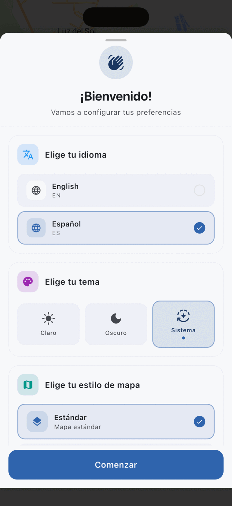
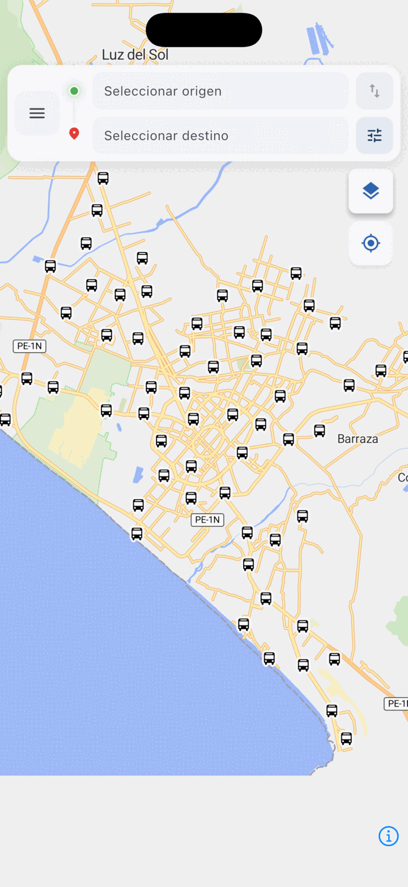
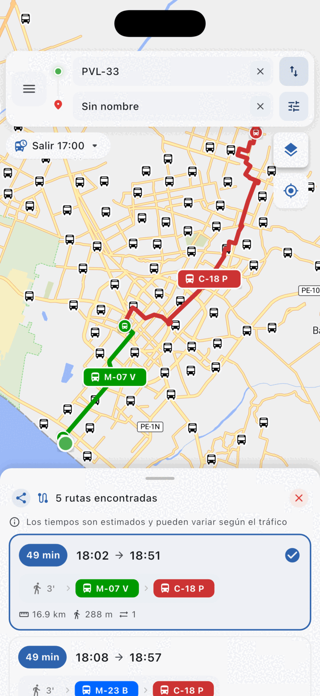
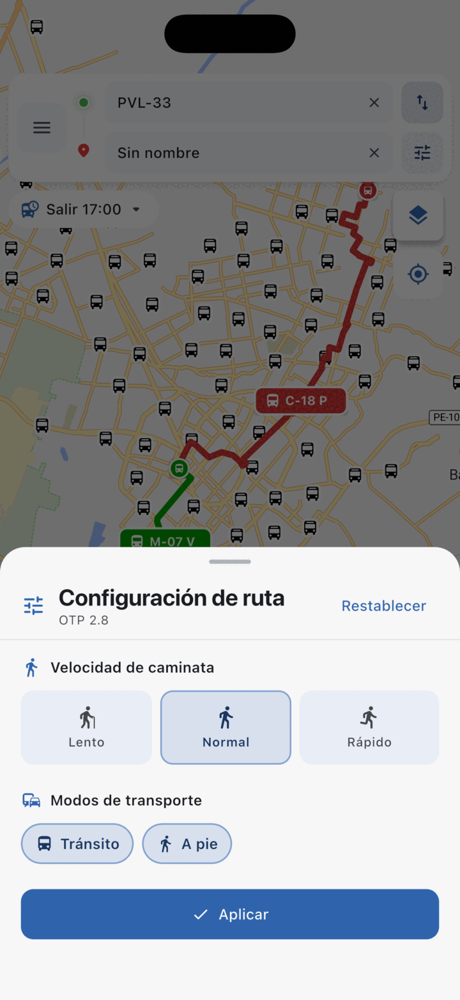
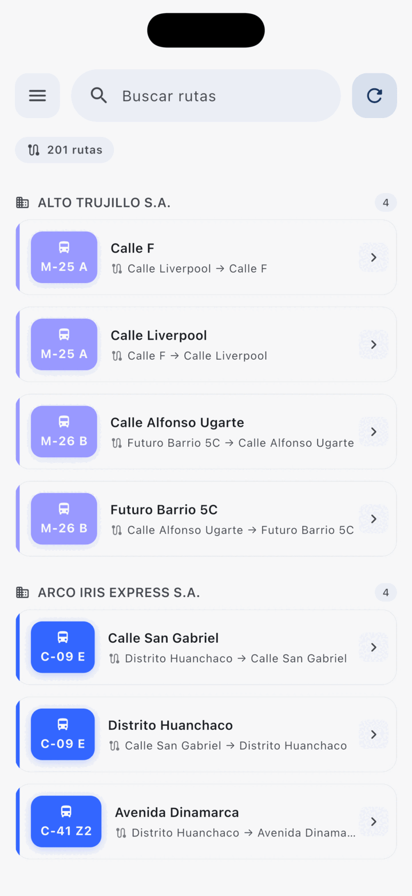

01
p. 3 — 8
Conceptos básicos
- Docker & docker-compose
- SSH y autenticación por llave
- Reverse proxy
- Git submodules
- SSL / Let's Encrypt
Samuel Rioja
CTO & Solution Architect
NEXION S.R.L.
Recorrido completo por la arquitectura del sistema MiRuta Trujillo: los servicios que corren en producción, el pipeline de datos en tiempo real, la app móvil y las operaciones del día a día.
trip_id — el problema centralUna "caja virtual" que contiene un programa con todo lo que necesita: sistema operativo mínimo, librerías y configs. Cada servicio del stack corre en su propia caja.
En vez de instalar OTP, Photon, PostgreSQL, etc. directamente en el server, cada uno corre en su propia caja Docker.
docker compose down + redeploy# Ver cajas corriendo docker ps # Reiniciar una caja docker restart <nombre> # Ver lo que imprime docker logs -f <nombre> # Logs últimos 100 docker logs --tail 100 <nombre> # Entrar a la caja con shell docker exec -it <nombre> bash
Un archivo docker-compose.yml describe varios containers Docker como un grupo: qué imagen, qué puertos, qué volúmenes, qué red comparten. Permite levantarlas todas con un solo comando.
En el server hay un folder por servicio, cada uno con su propio compose:
/root/ ├── otp/ docker-compose.yml ├── server/ docker-compose.yml ├── photon/ docker-compose.yml ├── tileserver-gl/ docker-compose.yml ├── gtfs-rt-proxy/ docker-compose.yml └── web-landing/ docker-compose.yml
Todos comparten la red trufi-server para hablarse entre sí.
cd /root/<servicio> # Levantar (build + start en background) docker compose up -d --build # Reiniciar (sin rebuild) docker compose restart # Bajar docker compose down # Ver el estado docker compose ps # Logs en vivo docker compose logs -f
Protocolo para ejecutar comandos en una computadora remota desde tu terminal local. Como tener una consola que está físicamente dentro del servidor — pero encriptada y autenticada por llave.
Generas un par de llaves: una pública y una privada. La pública la subes al server (al archivo ~/.ssh/authorized_keys del usuario remoto). La privada se queda en tu máquina y nunca sale.
Cuando conectas, SSH usa criptografía para demostrar que tienes la llave privada que coincide con esa pública — sin transmitirla.
authorized_keys# 1. Generar par de llaves (en tu máquina) ssh-keygen -t ed25519 -C "tu-email@ejemplo.com" # 2. Copiar la pública al portapapeles cat ~/.ssh/id_ed25519.pub | pbcopy # macOS cat ~/.ssh/id_ed25519.pub | xclip # Linux # 3. (un admin ya autorizado) la agrega: echo "ssh-ed25519 AAAA... tu-email" \ >> /root/.ssh/authorized_keys # 4. Conectarte ssh root@trujillo.trufi.dev
Un programa que recibe TODAS las peticiones públicas (puerto 80/443) y las redirige al servicio interno correcto. En este stack lo cumple YARP (.NET 10).
Solo el reverse proxy escucha públicamente. OTP, Photon, TileServer, etc. están escondidos detrás — no son accesibles directamente desde internet.
Si alguien hace GET trujillo.trufi.dev/otp/…, YARP lo manda internamente a http://otp:8080/…. Beneficios:
Cliente │ HTTPS (puerto 443) ▼ trujillo.trufi.dev │ ▼ ┌─────────────────────────┐ │ YARP (reverse proxy) │ │ - SSL termination │ │ - request logging │ └─────────────────────────┘ │ ├── /otp/* ──▶ http://otp:8080 ├── /photon/* ──▶ http://photon:2322 ├── /tiles/* ──▶ http://tileserver-gl └── / ──▶ http://web-landing
Un repo git puede "incluir" otros repos como subcarpetas, fijando un commit específico de cada uno. Permite versionar qué versión del código externo usas sin duplicarlo en tu propio repo.
OTP, Photon, TileServer GL y YARP/server son repos de trufi-association (mantenidos por la comunidad Trufi). No son nuestros, pero los necesitamos en producción.
Los traemos como submódulos para:
# Clonar este repo CON submódulos git clone --recurse-submodules <url> # Si ya cloneaste sin submódulos git submodule update --init --recursive # Actualizar a últimos commits remotos git submodule update --remote --merge # Ver estado de cada submódulo git submodule status # Cambiar al main de un submódulo específico cd server/otp git checkout main git pull
El candadito verde 🔒 en el browser. Necesario para que la conexión cliente ↔ servidor sea encriptada (HTTPS) y para evitar ataques man-in-the-middle. Sin esto, la app móvil no podría hablar con OTP de manera segura.
Let's Encrypt es una CA (Certificate Authority) gratis y automatizada. En lugar de pagar a Comodo o DigiCert, te da certificados válidos de 90 días, renovables sin límite.
El proceso (ACME):
LettuceEncrypt es la librería .NET que YARP usa para gestionar el ciclo de vida de certificados Let's Encrypt. Cero config manual.
// Program.cs (resumido)
builder.Services
.AddLettuceEncrypt(opts => {
opts.AcceptTermsOfService = true;
opts.DomainNames = new[] {
"trujillo.trufi.dev"
};
opts.EmailAddress = "admin@...";
})
.PersistDataToDirectory(
new DirectoryInfo("/data/lettuce"),
pfxPassword: null);
Los certificados persisten en /root/server/data/lettuce-encrypt/ (backupear si reinstalas).
Estándar abierto de Google (2006) para describir transporte público estático: qué líneas existen, dónde están los paraderos, qué horarios siguen. Formato: un .zip con archivos .txt en CSV.
routes.txt — qué líneas existen (Línea 19, etc.)stops.txt — paraderos (lat/lon, nombre)trips.txt — un viaje específico de una líneastop_times.txt — horario de cada parada de cada tripfrequencies.txt — "cada 5 min sale un bus" (frecuencias en lugar de horarios fijos)calendar.txt — qué días opera (lun-vie / fines de semana)shapes.txt — geometría de las rutas (puntos lat/lon)Vive en server/data/trujillo.gtfs.zip (18 MB). Lo consumen OTP al levantarse para construir el graph de routing.
Particularidad: usa frequencies.txt con exact_times=1. Eso significa que en lugar de listar cada bus de las 6:00, 6:05, 6:10..., el GTFS define una "plantilla" de trip y dice "se repite cada 5 min entre 5:30 y 22:00".
Esa decisión de modelado tiene una consecuencia importante en GTFS-RT — la vemos en la slide del gtfs-rt-proxy.
Extensión del estándar GTFS para datos en vivo: dónde están los buses en este momento, retrasos en tiempo real, alertas de servicio. Formato: protobuf (binario, no texto), llamado típicamente .proto.
En Trujillo solo tenemos vehicle positions — los choferes reportan su ubicación cada pocos segundos.
El driver app (otra app, no la de pasajeros) publica el feed a S3:
https://trujillo-admin-storage.s3... /driver/gtfsrt/pe-trujillo.proto
OTP no consume directo ese feed. Pasa primero por el gtfs-rt-proxy, que lo enriquece (le agrega los trip_id que faltan) antes de entregárselo a OTP cada 30s.
Por qué hace falta el proxy → ver slide siguiente.
trip_id — el problema central que resuelve este sistemaCada viaje específico de un bus tiene un trip_id único en el GTFS estático. Pero el driver app de Trujillo reporta solo route_id + direction_id + start_time — no el trip_id. OTP necesita el trip_id para predecir ETAs.
Cuando OTP recibe una posición de bus, intenta matchear ese bus con un trip específico del GTFS. Si encuentra el trip, puede:
Sin el trip_id, OTP solo sabe "hay un bus por ahí en la línea 19" — no "el bus que sale a las 14:30 va con 5 min de retraso".
Como el GTFS de Trujillo usa frequencies.txt con exact_times=1, cada "trip plantilla" representa decenas de buses reales (uno cada 5 min).
El proxy resuelve esto expandiendo los trips:
# Antes (GTFS original): trip_id = 19962292 ← plantilla cada 5 min # Después (expandido): 19962292000000 ← bus de las 5:30 19962292000001 ← bus de las 5:35 19962292000002 ← bus de las 5:40 ... 19962292000069 ← bus de las 11:15
El proxy infiere a qué slot pertenece cada vehículo cruzando route_id + direction_id + start_time con la tabla de frecuencias.
El "Wikipedia de los mapas". Datos cartográficos libres y editables colaborativamente, con licencia ODbL. Cada calle, edificio, parque, río del mundo. La fuente única de geometría que usa todo el stack.
El extract de Trujillo se genera con trufi-pbf-extractor, herramienta de Trufi Association que automatiza el recorte de OSM por ciudad.
# 1. Configurar .env CITY=trujillo BBOX=-79.10,-8.20,-78.95,-8.05 GEOFABRIK_URL=https://download.geofabrik.de/... # 2. Levantar el container docker compose up # Adentro hace: # - download del .pbf país desde Geofabrik # - osmium extract con el bbox configurado # - escupe trujillo.osm.pbf en data/
El extract final vive en server/data/trujillo.osm.pbf (2.3 MB) — formato .osm.pbf (Protocol Buffer comprimido).
.mbtiles que sirve son tiles vectoriales generados desde el mismo OSMUna sola fuente de verdad geográfica: cuando regeneramos el OSM con trufi-pbf-extractor, hay que regenerar los derivados (graph de OTP, mbtiles, índice de Photon) para que el sistema quede consistente.
.mbtilesLos mapas modernos no se sirven como imágenes pre-pintadas (raster), sino como pequeños fragmentos de geometría que el cliente renderiza con código. Más livianos, infinitamente zoomables, retematizables al vuelo.
Raster (clásico): el server pinta una imagen 256×256 PNG y la manda al cliente. Cada zoom requiere un set distinto. Pesado y rígido.
Vector tiles: el server manda solo geometría (líneas, polígonos, puntos) en un formato binario eficiente (Mapbox Vector Tile). El cliente las dibuja con WebGL/MapLibre.
El formato .mbtiles es una base SQLite con TODOS los tiles de una región indexados por (z, x, y). Trujillo entero cabe en 4.7 MB.
Generación y serving cubiertos por dos repos de Trufi Association, que arriba envuelven herramientas oficiales:
openmaptiles/planetiler-openmaptiles)# Flujo end-to-end:
trujillo.osm.pbf
↓ trufi-mbtiles-generator
↓ (Planetiler + OpenMapTiles)
trujillo.mbtiles (4.7 MB)
↓ trufi-server-tileserver-gl
↓ (TileServer GL)
GET /tiles/{z}/{x}/{y}.pbf ← MapLibre
MapLibre GL es la librería que la app móvil usa para renderizar — fork open-source de Mapbox GL (que se cerró en 2020).
Lenguaje de consulta para APIs (Facebook, 2015). En vez de muchos endpoints REST, hay un solo endpoint que recibe queries donde el cliente pide exactamente los campos que necesita — ni más, ni menos.
/v1/, /v2/, etc.POST /otp/routers/default/index/graphql
Content-Type: application/json
{
"query": "{
plan(
from: { lat: -8.11, lon: -79.03 },
to: { lat: -8.10, lon: -79.05 },
transportModes: [
{ mode: TRANSIT },
{ mode: WALK }
],
numItineraries: 3
) {
itineraries {
duration
walkDistance
legs {
mode
startTime
from { name }
to { name }
route { shortName longName }
}
}
}
}"
}
Todo corre en un único servidor con Docker. YARP enruta el tráfico HTTPS hacia los servicios internos. OTP es el cerebro; el gtfs-rt-proxy lo alimenta con datos en tiempo real ya enriquecidos.
Flutter · MapLibre · trufi-core
HTML + CSS + JS · i18n ES/EN
.NET 10 · routing · request logging · :80 :443
SSL · LettuceEncrypt
OpenTripPlanner · :8080
Geocoding · :2322
Vector tiles · interno
nginx · estático
Python + Flask · enriquece trip_id · :8001
Fallback dev / demos · :9000
Analytics — request logs
trujillo-admin-storage/driver/gtfsrt/pe-trujillo.proto · vehicle positions
Cada uno en su container Docker, con su healthcheck, su repo y su rol específico en el pipeline. Vamos a verlos uno por uno.
El cerebro del sistema. Java 21. Ruteo multimodal con tiempo real. Consume GTFS estático + GTFS-RT enriquecido del proxy.
Servicio crítico custom. Python + Flask. Inyecta el trip_id que falta en el feed GTFS-RT del driver app antes de entregárselo a OTP.
Geocoding ("dónde está…"). Java. Indexa OSM para resolver direcciones a lat/lon. Índice de Perú completo.
Sirve los vector tiles que renderiza la app móvil con MapLibre. Lee de trujillo.mbtiles. 6 estilos disponibles.
Reverse proxy edge. .NET 10. TLS automático con Let's Encrypt, routing por path, request logging a PostgreSQL para analytics.
Página estática que se sirve en trujillo.trufi.dev/. nginx + HTML/CSS/JS vanilla, i18n ES/EN.
Antes de meternos en cada servicio uno por uno, abramos una terminal y mostremos cómo se ve la cosa "ahora mismo": qué corre, cómo se siente la máquina, qué dicen los logs.
ssh root@trujillo.trufi.devdocker ps --format "table {{.Names}}\t{{.Status}}"df -h · free -h · uptimedocker logs -f gtfs-rt-proxy (~30s)curl http://127.0.0.1:8001/healthz | jqls /root/ — un folder por servicio:8080
Construye un grafo de la ciudad combinando OSM + GTFS, y resuelve viajes multimodales (transporte + caminata + bici). Java 21 sobre eclipse-temurin:21-jre-jammy. Memoria por defecto 2 GB.
trujillo.gtfs.zip — GTFS estático (18 MB)trujillo.osm.pbf — OSM extract (2.3 MB)gtfs-rt-proxy (poll 30s)graph.obj — grafo serializado (~20 MB)--load (≪segundos)POST /otp/routers/default/index/graphql
POST /otp/gtfs/v1 (alias OTP 2.x)
# Ejemplo
{ "query": "{ routes { gtfsId shortName longName } }" }
GET /otp/ # Configurado en compose wget --spider http://localhost:8080/otp/ interval: 30s · start_period: 120s retries: 3
Cambiar versión: otpversion=2.7.0 docker compose up -d --build
Red Docker trufi-server. OTP es alcanzable desde otros containers como http://otp:8080.
Toda la información en tiempo real (¿dónde está cada bus ahora mismo?) viene de una app móvil distinta: la que llevan los conductores. Es el "upstream" de nuestro pipeline. No la mantenemos nosotros — pero entender qué publica es esencial para diagnosticar el sistema.
trujillo-admin-storagedriver/gtfsrt/pe-trujillo.protoroute_id + direction_id + start_time + lat/lontrip_id (el viaje específico)Por eso necesitamos el gtfs-rt-proxy: para enriquecer el feed antes de que OTP lo consuma.
La driver app es de un equipo distinto (típicamente la autoridad de transporte o un contratista). Si los datos en tiempo real fallan en la app de usuario, el primer chequeo es /healthz del proxy: si entities=0, el problema está aguas arriba — en la driver app o en S3.
OTP lee dos configs al arrancar. Pequeñas, pero deciden cómo se comporta el ruteo: penalidades de caminata, transferencias máximas, velocidades, timeout de la API.
Activa features opcionales del motor. Hoy solo tenemos uno: el endpoint GraphQL (que la app móvil consume).
GtfsGraphQlApi · ✅ activoSin esta flag, la API legacy /plan sigue funcionando — pero la app móvil deja de andar.
Define cómo OTP planifica rutas. Las defaults actuales están afinadas para el caso peruano:
numItineraries: 12 · alternativas máxtransferPenalty: 1800s · castigo por trasbordowalkSpeed: 1.3 m/s · velocidad caminataboardCost: 600s · costo de subir al busmaxNumberOfTransfers: 4El router-config.json aún no declara gtfsRealtimeFeeds[] apuntando al gtfs-rt-proxy. La integración existe (el proxy responde) pero falta cablear el polling oficial en la config de OTP.
Toda la app móvil habla con OTP por una sola URL POST con un body GraphQL. El cliente pide exactamente los campos que necesita y OTP responde solo con esos. Esto es lo que se ve cada vez que un usuario planifica un viaje.
{
plan(
from: { lat: -8.1116, lon: -79.0288 },
to: { lat: -8.0900, lon: -79.0500 },
transportModes: [
{ mode: TRANSIT },
{ mode: WALK }
],
numItineraries: 3
) {
itineraries {
duration
walkDistance
legs {
mode
startTime
from { name }
to { name }
route { shortName longName }
}
}
}
}{
"data": {
"plan": {
"itineraries": [{
"duration": 1830,
"walkDistance": 412.5,
"legs": [
{
"mode": "WALK",
"from": { "name": "Origin" },
"to": { "name": "Av. España" }
},
{
"mode": "BUS",
"startTime": 1714312800000,
"route": {
"shortName": "19",
"longName": "Centro - El Porvenir"
},
"from": { "name": "Av. España" },
"to": { "name": "Av. Larco" }
}
]
}, ...]
}
}
}El cliente decide qué campos quiere — la app móvil ahorra ancho de banda pidiendo solo lo que necesita. Una versión nueva de la app puede pedir más campos sin romper la API. OTP no necesita versionado de endpoints.
:8001
Python 3.11 + Flask + Gunicorn. Lee el feed protobuf que el driver app publica a S3, le inyecta el trip_id faltante, y lo entrega listo para OTP. Cache 5s. Polling cada 30s desde OTP. 2 workers. ~75 LOC en app.py.
GET / — modo (sim/prod), upstream URLGET /gtfsrt.proto — feed enriquecido (binario)GET /healthz — JSON con stats del último ciclo{
"status": "ok",
"schedules_loaded": 247,
"last_cache_age_s": 2.34,
"last_stats": {
"entities": 3,
"rewritten": 3,
"skipped_no_schedule": 0,
"skipped_already_has_trip_id": 0,
"entities_without_trip": 0
}
}
SIMULATED=false
UPSTREAM_URL_PROD=https://trujillo-admin-storage
.s3.us-east-1.amazonaws.com/
driver/gtfsrt/pe-trujillo.proto
UPSTREAM_URL_SIM=http://gtfs-rt-simulator:9000
/pe-trujillo.proto
GTFS_PATH=/app/data/trujillo.gtfs.zip
CACHE_TTL=5
UPSTREAM_TIMEOUT=10
El proxy fuerza Cache-Control: no-cache + un parámetro ?_=<ms> al fetchear S3, para evitar leer un proto rancio del CDN.
# requirements.txt
flask==3.0.3
gunicorn==22.0.0
requests==2.32.3
gtfs-realtime-bindings==1.0.0
protobuf>=4.21,<5
# Dockerfile
python:3.11-slim
gunicorn --workers 2 --timeout 30
--bind 0.0.0.0:8000
--access-logfile -
Si fetch + enrich > 25s, el worker timeout (30s) lo mata. En condiciones normales son ~50ms.
enrich() — qué pasa cuando llega un feedPara cada vehículo en el feed, el proxy decide qué hacer. La mayoría de las veces, le inyecta el trip_id que falta. Cinco pasos.
El feed puede tener entidades de varios tipos. Si no es vehículo, lo ignora.
Si sí, no hay nada que enriquecer — pasa de largo.
Necesita route_id + direction_id + start_time. Sin alguno, no se puede.
Llama a schedule.match() que cruza con el GTFS estático y devuelve el mejor candidato.
Inyecta el trip_id, alinea start_time, y completa el id del vehículo con la placa si faltaba.
Los stats que devuelve /healthz te dicen cómo está yendo el match: si skipped_no_schedule sube, hay desfase entre el feed del driver y el GTFS estático.
El GTFS estático dice "cada 5 minutos sale un bus en la línea 19". El driver app reporta una hora aproximada de salida. La función match() encuentra el slot de frecuencia más cercano y devuelve el trip_id exacto.
Lee trips.txt + frequencies.txt del GTFS y construye una tabla (route_id, direction) → lista de slots.
Para cada vehículo, usa bisect (búsqueda binaria, O(log n)) sobre los slots del día.
Compara el slot anterior y el siguiente al driver-time, elige el de menor diferencia absoluta.
Concatena base_trip_id + índice del slot a 6 dígitos. Ejemplo: "trip_19_1" + "000037".
El GTFS del proxy debe tener frequencies.txt. Si está expandido a stop_times.txt, el constructor lanza RuntimeError. Por eso hay dos GTFS distintos: el del proxy (1 MB, con frequencies) y el de OTP (18 MB, expandido).
:9000
Threading HTTP server en Python que reproduce trayectorias reales recordadas, en loop, con interpolación lineal entre puntos. Útil para dev, presentaciones, fines de semana sin actividad real.
# ONE-TIME (cuando se grabó historia): GTFS-RT/history/*.proto → analyze.py → patterns.json (~260 KB, commiteado) # RUNTIME (en el container): patterns.json → server.py → build_pool(clone_factor) → build_feed(now) → /pe-trujillo.proto
{
"trajectories_kept": 18,
"trajectories": [
{
"route_id": "19",
"direction_id": 1,
"duration_seconds": 1125,
"sample_plate": "PUN-7170",
"points": [
{"t":0,"lat":-8.139,"lon":-79.06,"heading":127.5},
{"t":5,"lat":-8.139,"lon":-79.06,"heading":127.5},
...
]
}
]
}
CLONE_FACTOR=3 — clones por trayectoriaMAX_VEHICLES=0 — 0 = sin topePATTERNS_PATH=/app/patterns.jsonPORT=9000Cada clon arranca con un offset aleatorio dentro de su duration_seconds — así no aparecen todos juntos en el mismo punto. Seed fija: 42.
elapsed = now - spawn_ts
loop_idx = int(elapsed // duration)
t_in_traj = elapsed - loop_idx * duration
# entity_id = "PUN-7170-3" (loop 3)
GET /pe-trujillo.proto — feedGET /gtfsrt.proto — aliasGET /healthz — pool size, start time# En server/gtfs-rt-proxy/.env: SIMULATED=true CLONE_FACTOR=3 MAX_VEHICLES=10 docker compose restart proxy
cd server/gtfs-rt-proxy/simulator python analyze.py \ --history ../../GTFS-RT/history \ --out patterns.json \ --min-duration 60 \ --sample-interval 5
:2322
Convierte texto libre como "av. España 1234" en coordenadas. Backend: Java 21 sobre Alpine + ElasticSearch interno. Índice precomputado de Perú descargado de GraphHopper. Sin gpu, sin training — solo búsqueda full-text sobre OSM.
# Búsqueda
curl 'http://localhost:2322/api?q=plaza+armas+trujillo&limit=5'
{
"features": [{
"geometry": {
"coordinates": [-79.0287, -8.1118],
"type": "Point"
},
"properties": {
"name": "Plaza de Armas",
"city": "Trujillo",
"country": "Peru",
"type": "tourism"
}
}, ...]
}
# Reverse (coords → dirección)
curl 'http://localhost:2322/reverse?lat=-8.11&lon=-79.03'
El init.sh descarga la lista de países desde download1.graphhopper.com/public/extracts/by-country-code/ y deja elegir. Para Trujillo: pe. Otros usados en el ecosistema Trufi: bo, ec, rw, us, br.
URL: https://download1.graphhopper.com/public/
extracts/by-country-code/pe/
photon-db-pe-latest.tar.bz2
# Tamaño aprox: ~varios GB (no commiteable)
# Se extrae a: /app/photon_data/elasticsearch/
# Estructura interna:
photon_data/
└── elasticsearch/
├── nodes/
└── indices/
| Tamaño país | RAM sugerida |
|---|---|
| Perú, Bolivia, Ecuador | 1–2 GB |
| Brasil, EEUU | 4–8 GB |
test: ["CMD", "wget", "--spider",
"http://localhost:2322/api?q=test"]
interval: 30s · start_period: 60s
Imagen maptiler/tileserver-gl:latest. Sirve vector tiles (Mapbox Vector Tiles dentro de un .mbtiles, que es SQLite). La app móvil los renderiza con MapLibre GL en cliente — el servidor solo entrega trozos.
osm-bright — default · claro y detalladoosm-liberty — Mapbox-like libremaptiler-basic — minimalistapositron — gris claro para data vizdark-matter — noche / dashboardsfiord-color — azul oscuro eleganteCada estilo es un folder con style.json (Mapbox Style Spec v8) + sprites + glyphs.
# Tiles vectoriales
GET /data/{source}/{z}/{x}/{y}.pbf
# Style JSON (lo que carga MapLibre)
GET /styles/osm-bright/style.json
# Tiles raster (fallback)
GET /styles/osm-bright/{z}/{x}/{y}.png
# TileJSON
GET /data/openmaptiles.json
# Health
GET /health
{
"options": {
"paths": {
"root": "/data",
"fonts": "fonts",
"styles": "styles",
"mbtiles": ""
}
},
"data": {
"openmaptiles": {
"mbtiles": "/data/trujillo.mbtiles"
}
},
"styles": {
"osm-bright": {
"style": "osm-bright/style.json",
"tilejson": {
"type": "overlay",
"bounds": [-79.10, -8.20,
-78.96, -8.05]
}
}
}
}
-79.10,-8.20,-78.96,-8.05 · Cómo se genera el .mbtiles: con trufi-mbtiles-generator desde el OSM extract de Perú.
:80 :443
.NET 10 (preview) + YARP 2.2.0 + LettuceEncrypt 1.3.3. Termina TLS automático con Let's Encrypt, enruta requests a los containers internos, y registra cada request en PostgreSQL para analítica posterior.
aspnet:10.0-previewYarp.ReverseProxy 2.2.0LettuceEncrypt 1.3.3EntityFrameworkCore 10 + NpgsqlEl proxy llama AddLettuceEncrypt() y la librería se encarga del resto: HTTP-01 challenge, emisión, renovación, persistencia.
appsettings.json: dominios + email/etc/lettuce-encryptUna sola línea en Program.cs:
AddReverseProxy().LoadFromConfig(...). Toda la lógica vive en
appsettings.json, que setup.sh modifica.
El mount es :ro: editar el JSON requiere docker compose restart.
Para agregar un nuevo servicio detrás del proxy, no se toca código — solo se corre setup.sh que muta el appsettings.json y se reinicia el contenedor.
Middleware que no bloquea: encola la request en un Channel de System.Threading; un worker en background hace batches de 100 (o cada 1s) e inserta. Compresión auto-decodificada. Payload >1 MB: stub. Bytes nulos sanitizados (compatibilidad UTF-8 PostgreSQL).
requests| Columna | Tipo |
|---|---|
id | bigint PK |
method | varchar(10) |
uri | text |
host | varchar(255) (idx) |
ip | varchar(45) |
device_id | varchar(255) (idx) |
user_agent | text |
request_content_type | varchar(255) (idx) |
request_headers | text (JSON) |
body | text |
status_code | int |
response_content_type | varchar(255) |
response_headers | text (JSON) |
response_body | text |
received_at | timestamp (idx) |
created_at | timestamp |
/analytics-api/*GET /logs — listado con filtros (host, método, status, IP, fechas, búsqueda)GET /stats — totales: requests, dispositivos únicos, hosts únicosGET /stats/hourly — buckets por hora UTCGET /stats/endpoints — top URIs por volumenGET /stats/devices — top dispositivosGET /swagger — UI interactiva para probarChannel<T> — nunca bloquea la requestLas queries SQL más usadas (top hosts, errores 5xx, dispositivos únicos) están en el cheat sheet. Para investigaciones puntuales, abrir Swagger en el browser y filtrar visualmente.
El script lee trufi-proxy.json del nuevo servicio, pide el dominio público, y muta data/config/appsettings.json con jq: agrega cluster YARP, ruta con match por hostname, y dominio a LettuceEncrypt para que renueve cert automáticamente.
trufi-proxy.jsonCon name, container, port y si quiere o no analytics.
./setup.shMenú interactivo. Opción 1 pide la ruta del repo y el dominio público.
jqAgrega el dominio a LettuceEncrypt, define la ruta YARP, define el cluster con la dirección interna.
docker compose restart server recarga la config. La DB no se toca.
data/config/ — appsettings.jsondata/lettuce-encrypt/ — certsdata/postgres/ — DBname, descriptioncontainer, portanalytics (bool)YARP loggea todas las peticiones. Vamos a abrir el Swagger UI de la Analytics API y a explorar la data en producción: top hosts, errores recientes, dispositivos únicos.
https://trujillo.trufi.dev/analytics-api/swagger en el browserGET /stats — total requests / dispositivos / hostsGET /stats/hourly — distribución por horaGET /stats/endpoints?limit=10 — top URIsGET /logs?statusCode=500GET /logs?deviceId=...Página estática con HTML + CSS + JS vanilla. Sin frameworks. nginx:alpine la sirve directo. i18n con JSON + data-i18n, theme toggle persistente, accesibilidad básica.
<header>
logo + brand
+ langToggle (ES/EN)
+ themeToggle (sun/moon)
<section id="hero">
h1 (con grad text)
+ 4 bullet features
+ store badges
(Google Play / App Store)
<section id="alianzas">
5 logos de socios
<footer>
copyright + email + Trufi link
<!-- HTML -->
<p data-i18n="heroSub">...</p>
<span data-i18n-html="heroTitle">...</span>
// JS vanilla (140 LOC)
const lang = navigator.language.slice(0,2);
const dict = await fetch(`l10n/${lang}.json`)
.then(r => r.json());
document.querySelectorAll('[data-i18n]')
.forEach(el => el.textContent = dict[
el.dataset.i18n
]);
// localStorage para persistir
// 18 CSS vars en :root
// + override en [data-theme="dark"]
// JS:
const saved = localStorage.getItem('theme');
const auto = matchMedia(
'(prefers-color-scheme: dark)'
).matches ? 'dark' : 'light';
document.documentElement
.dataset.theme = saved || auto;
server {
listen 80;
root /usr/share/nginx/html;
index index.html;
location / {
try_files $uri $uri/ /index.html;
}
}
Solo los archivos críticos viven en el repo (~26 MB). Los derivados (graph de OTP, índice de Photon) los regeneran los servicios al arrancar.
| Archivo | Tamaño | Servicio | Función |
|---|---|---|---|
trujillo.gtfs.zip | 18 MB | OTP | Schedule completo expandido |
trujillo.osm.pbf | 2.3 MB | OTP | Extract OSM (red vial) |
trujillo.mbtiles | 4.7 MB | tileserver-gl | Vector tiles para la app |
trujillo.gtfs.zip (small) | 1 MB | gtfs-rt-proxy | GTFS con frequencies (lookup) |
patterns.json | 260 KB | simulator | 18 trayectorias recordadas |
SERVER=root@trujillo.trufi.dev # pull (server → repo) scp $SERVER:/root/otp/data/trujillo.gtfs.zip \ server/data/ # push (repo → server, destructivo) scp server/data/trujillo.gtfs.zip \ $SERVER:/root/otp/data/
graph.obj (~20 MB) — OTP regeneraphoton_data/ (varios GB) — GraphHopper.bakConstruida con Flutter sobre rutometro-app · iOS + Android · open source





Flutter 3.41.0 (locked vía FVM) sobre el framework
Trufi Core v5.8.0. Estado con BLoC, navegación
con go_router, mapas con MapLibre GL. Sin tracking de terceros, sin
Google Maps. Versión actual: 1.3.0+9.
flutter_bloc 9.1 — state managementprovider 6.1 — inyección de dependenciasgo_router 17 — navegaciónmaplibre_gl 0.25 — mapash3_flutter 0.7 — H3 para analyticsTrufi Core 5.8 — framework baseTrufi Core viene de GitHub packages, no de pub.dev.
otp.trujillo.trufi.dev — GraphQL routingphoton.trujillo.trufi.dev — geocodinganalytics.trujillo.trufi.dev — request logsassets/routing/trujillo.gtfs.zipassets/offline/trujillo.mbtilesassets/branding/*.pngapp_es.arb — Español (default)app_en.arb — Englishapp_de.arb — Deutsch (fallback)1.3.0+9 · iOS + Android · open source
Toda la configuración (URLs del backend, ciudad, coordenadas, colores, contacto) está hardcodeada en lib/main.dart. No hay .env. Cambiar cualquier cosa implica editar el archivo y compilar una nueva versión.
No hay CI configurado — los builds son manuales.
FVM es obligatorio (Flutter 3.41.0 está pineado). Detalle completo en
mobile-app/docs/BUILD_GUIDE.md y
mobile-app/docs/RELEASE_GUIDE.md.
Instalar FVM, instalar Flutter 3.41.0, ejecutar fvm flutter pub get. Sin FVM las dependencias rompen.
Editar pubspec.yaml incrementando el build number (después del +).
Android: build appbundle (.aab para Play Store). iOS: build ios --no-codesign.
Requiere android/key.properties + upload-keystore.jks (no se commitean).
Abrir Runner.xcworkspace, configurar Team, Product → Archive → Distribute.
Google Play Console (subir .aab) · App Store Connect (subir desde Xcode).
Si compilas con flutter directo en lugar de fvm flutter, las dependencias de Trufi Core se rompen silenciosamente. Si android/key.properties está mal configurado, el build falla silencioso — siempre usar --verbose ante dudas.
version
en pubspec.yaml (siempre incrementar el build number
después del +), commit + tag, build, smoke test en device
real, upload, llenar release notes en la consola.
Las 9 tareas más frecuentes que un admin ejecuta sobre la app móvil. Cada una es un cambio + rebuild + release. Detalle en las próximas slides.
Cada vez que quieres publicar cambios, hay que incrementar el build number (siempre) y opcionalmente el semver (para features visibles).
pubspec.yamlversion: 1.3.0+10 # ^^^^^ ^^ # semver build_number # Solo bump de build (parche interno) 1.3.0+9 → 1.3.0+10 # Bump de patch (bug fix usuarios) 1.3.0+10 → 1.3.1+11 # Bump de minor (feature nueva) 1.3.0+10 → 1.4.0+11
git add pubspec.yaml git commit -m "Bump 1.3.0+10 → 1.3.0+11" git tag v1.3.0+11 git push --tags
El tag es importante para correlacionar crashes/issues con la versión exacta del binario.
Las URLs de OTP y Photon están hardcodeadas en lib/main.dart. Cambiarlas requiere recompilar y publicar nueva versión.
// lib/main.dart // línea 51 — URL de OTP otpEndpoint: 'https://trujillo.trufi.dev/otp/...', // línea 221 — URL de Photon photonEndpoint: 'https://trujillo.trufi.dev/photon/...',
La app embebe el GTFS y los vector tiles para funcionar sin conexión. Cuando cambia la red de transporte o el mapa, hay que reemplazar los assets y rebuildear.
mobile-app/ ├── assets/ │ ├── routing/ │ │ └── trujillo.gtfs.zip ← GTFS │ └── offline/ │ └── trujillo.mbtiles ← mapa
Sin código que tocar — solo reemplazar los archivos y recompilar.
trujillo.gtfs.zip falta, la app crashea al abrir TransportListScreenunzip -t trujillo.gtfs.zipEl branding visible al usuario está repartido entre los assets de la app y los iconos del launcher de cada plataforma.
mobile-app/assets/branding/
├── app-logo.png ← splash, drawer
├── miruta-icon.png ← header
└── partners/ ← logos de socios
├── MPT-logo.png
├── MTC-logo.png
└── ...
Reemplazar el archivo (mismo nombre y dimensiones).
# Android (varios tamaños) android/app/src/main/res/ ├── mipmap-mdpi/ ic_launcher.png (48px) ├── mipmap-hdpi/ ic_launcher.png (72px) ├── mipmap-xhdpi/ ic_launcher.png (96px) ├── mipmap-xxhdpi/ ic_launcher.png (144px) └── mipmap-xxxhdpi/ ic_launcher.png (192px) # iOS (set completo) ios/Runner/Assets.xcassets/ └── AppIcon.appiconset/ (varios PNG)
Usar flutter_launcher_icons para generar todos los tamaños desde un único PNG fuente.
Si la app va a desplegarse en otra ciudad, hay que cambiar el centro del mapa, el nombre y — crítico — el bounding box que Photon usa para el geocoding.
// lib/main.dart líneas 31-34 defaultLatLng: LatLng(-8.108, -79.029), defaultZoom: 13.0, city: 'Trujillo', countryCode: 'PE',
// lib/main.dart línea 224 photonBbox: '-79.10,-8.20,-78.95,-8.05', // ^min_lon ^min_lat ^max_lon ^max_lat // Photon devuelve 0 resultados FUERA de // este bbox — si está mal el geocoding // "no encuentra nada"
Sacar el bbox correcto desde bboxfinder.com dibujando un polígono sobre la ciudad.
La i18n usa archivos ARB (Application Resource Bundle, formato Flutter). Hay ~50 keys que traducir. Añadir un idioma toma ~30 min de copiar/traducir/regenerar.
# 1. Crear el ARB del idioma nuevo cp lib/l10n/app_es.arb \ lib/l10n/app_qu.arb # quechua # 2. Traducir las ~50 keys (cambiar @@locale) # 3. Regenerar las clases Dart fvm flutter gen-l10n # 4. Recompilar fvm flutter run
// lib/main.dart
supportedLocales: [
Locale('es'),
Locale('en'),
Locale('qu'), // ← nuevo
],
El idioma del sistema del usuario manda — si no hay match exacto, cae al primero soportado (es).
Cuando la app está caída para usuarios reales y necesitas publicar una corrección lo más rápido posible. Tanto Play como App Store tienen mecanismos para acelerar.
# 1. Pull, fix, bump del patch git pull # (hacer el fix mínimo) # pubspec.yaml: 1.3.0 → 1.3.1 # 2. Build release fvm flutter build appbundle --release # 3. Build iOS fvm flutter build ipa --release
Cuando un usuario clicka trujillo.trufi.dev/route/19 en su browser, lo ideal es que se abra la app si la tiene instalada (con el contexto), en lugar del browser. Hoy esto NO está activo — falta publicar 2 archivos en la web.
# Publicar en:
trujillo.trufi.dev/.well-known/assetlinks.json
# Contenido:
[{
"relation": ["delegate_permission/common.handle_all_urls"],
"target": {
"namespace": "android_app",
"package_name": "pe.trujillo.miruta",
"sha256_cert_fingerprints": [
"<SHA-256 del cert release>"
]
}
}]
# Publicar en:
trujillo.trufi.dev/.well-known/apple-app-site-association
# Contenido (sin extensión .json):
{
"applinks": {
"apps": [],
"details": [{
"appID": "<TEAM_ID>.pe.trujillo.miruta",
"paths": ["*"]
}]
}
}
El web-landing nginx debe servir estos paths con Content-Type: application/json y sin redirects.
Detalles no obvios que cuestan tiempo cuando los descubrís en producción. Memorizar antes de necesitarlos.
Sin FVM (Flutter Version Manager) trufi-core rompe en build. Si llegas a un repo limpio, instala FVM antes de cualquier flutter pub get.
brew tap leoafarias/fvm brew install fvm fvm install fvm use # respeta .fvmrc
El .mbtiles queda fijo en el binario. Si actualizas el mapa upstream, los usuarios no lo ven hasta el siguiente release.
El cliente HTTP de la app no reintenta. Si OTP devuelve un error, el usuario ve "no se encontraron rutas". Considerar agregar retry con backoff en algún momento.
Cada request a OTP/Photon manda headers X-Origin-* custom (device_id, app_version, locale). YARP los loggea a la DB para los reportes.
X-Origin-DeviceId: a1b2c3... X-Origin-AppVersion: 1.3.0+10 X-Origin-Locale: es
Ubuntu 22.04 + Docker. 4 GB RAM (ojo: sin swap). Health check global, deploy por servicio, backups, troubleshooting común.
ssh root@trujillo.trufi.dev '
docker ps --format "table {{.Names}}\t{{.Status}}"
echo
df -h | grep -v overlay
free -h
uptime
'
| Container | Estado |
|---|---|
server-server-1 | /dev/tcp no existe en /bin/sh |
trufi-tileserver-gl | healthcheck.js falla, GET / responde 200 |
docker logs -f <container> docker logs --tail 100 <container> docker logs --since 30m <container> docker logs -t <container> # timestamps
# Servicio local (proxy, web-landing): git push # this repo rsync -avz --exclude='.git' \ ./server/<svc>/ \ root@trujillo.trufi.dev:/root/<svc>/ ssh root@trujillo.trufi.dev \ "cd /root/<svc> && docker compose up -d --build" # Servicio submódulo (otp, photon, etc.): ssh root@trujillo.trufi.dev " cd /root/<svc> git pull docker compose up -d --build "
scp server/data/trujillo.gtfs.zip \ root@trujillo.trufi.dev:/root/otp/data/ ssh root@trujillo.trufi.dev ' rm /root/otp/data/graph.obj cd /root/otp && docker compose restart ' docker logs -f otp # ~2-3 min
docker exec server-db-1 \ pg_dump -U analytics analytics \ > backups/analytics-$(date +%F).sql
Síntomas comunes con su diagnóstico y solución. Si ningún caso acá resuelve tu problema, los logs (docker logs <container>) casi siempre dan la pista. También ver los docs específicos de cada servicio en server/docs/services/.
unhealthy pero funcionaRecolectar contexto en un solo comando para pegar en un ticket — slide siguiente al final de la sección.
unhealthy pero el servicio funcionaHealthchecks mal configurados que dan falsos negativos. El servicio responde pero Docker lo marca como roto.
server-server-1 — usa /dev/tcp que no existe en su shelltrufi-tileserver-gl — node healthcheck.js falla pero GET / responde 200docker logs --tail 20 <container> # si hay 200s saliendo, el servicio está bien
Dos opciones:
docker-compose.yml del servicio# Ejemplo: cambiar el healthcheck
services:
servicio:
healthcheck:
test: ["CMD", "curl", "-f", "http://localhost/"]
interval: 30s
timeout: 10s
retries: 3
YARP recibió la request, intentó proxearla al backend interno (OTP, Photon, etc.) y el backend no respondió. Casi siempre el backend está caído o reiniciando.
# 1. ¿Qué container falta o está reiniciando? docker ps -a # 2. Ver logs del culpable docker logs --tail 50 <container> # 3. Verificar la red trufi-server docker network inspect trufi-server
# Restart simple docker restart <container> # Si está realmente roto, recrear cd /root/<svc> docker compose down docker compose up -d --build # Verificar que YARP lo ve de nuevo curl -I https://trujillo.trufi.dev/<path>
El feed GTFS-RT no está llegando a OTP, o llega pero los trip_id no matchean. Síntoma típico: el mapa carga, las rutas existen, pero los buses están "congelados" o no aparecen.
curl http://127.0.0.1:8001/healthz | jq # Mirar last_stats: # - rewritten alto → todo bien # - skipped_no_schedule alto # → GTFS desactualizado # - skipped_already_has_trip_id alto # → driver app cambió formato # - HTTP error → S3 no responde
trujillo.gtfs.zip + restart proxy + restart OTP (regenerar graph)trujillo-admin-storage esté accesibleotp-config.json updatersfree -h muestra < 200 MB libreEl droplet tiene 4 GB de RAM y sin swap por defecto. OTP rebuild + Photon corriendo + analytics DB se acercan al techo. Cualquier pico mata containers con OOM.
# Ver memoria total y swap free -h # Ver swap activo (si lo hay) swapon --show # Ver uso por container docker stats --no-stream # Procesos top por consumo de RAM ps aux --sort=-%mem | head -10
# 1. Crear el archivo (4 GB) fallocate -l 4G /swapfile # 2. Permisos solo root chmod 600 /swapfile # 3. Formatear como swap mkswap /swapfile # 4. Activar swapon /swapfile # 5. Verificar free -h swapon --show
# Agregar a fstab para que monte al reboot echo '/swapfile none swap sw 0 0' \ >> /etc/fstab # Bajar swappiness (default 60 → 10) # para que el kernel use swap solo # cuando RAM se agota, no antes echo 'vm.swappiness=10' \ >> /etc/sysctl.conf sysctl -p
# 1. Desactivar el actual swapoff /swapfile # 2. Recrear con tamaño nuevo (8 GB) rm /swapfile fallocate -l 8G /swapfile chmod 600 /swapfile mkswap /swapfile swapon /swapfile # fstab no se toca: la entrada # es agnóstica al tamaño
A largo plazo: subir el droplet a 8 GB de RAM, o mover Photon a otra instancia (es el que más memoria consume).
df -h muestra > 90%El droplet tiene 78 GB. Lo que más crece: imágenes Docker viejas, logs de containers, backups .bak sin rotación, y photon_data/ (varios GB legítimos).
# Ver disco general
df -h | grep -v overlay
# Top 10 directorios más grandes
du -h /root/* | sort -hr | head -10
# Tamaño de imágenes Docker
docker images --format \
"table {{.Repository}}\t{{.Size}}"
# Docker cleanup (imágenes y volúmenes)
docker system prune -a --volumes
# Backups viejos de OTP
rm /root/otp/*.bak.*
rm -rf /root/otp/old_data/
# Logs gigantes (con cuidado)
truncate -s 0 \
$(docker inspect <container> \
--format='{{.LogPath}}')
OTP construye un graph en memoria desde GTFS + OSM al primer arranque. El proceso toma 2-3 minutos. Si tarda más o falla, los logs dicen exactamente por qué.
docker logs -f otp # Errores típicos: # "Could not find GTFS data" # → GTFS no está en /app/data/ # "OutOfMemoryError: Java heap space" # → subir JAVA_MAX_MEMORY o mem_limit # "Building graph" + 5 min → normal, esperar # "Loaded N stop times" → ya está casi listo
cd /root/otp # Borrar el graph viejo rm data/graph.obj # Reiniciar (regenera todo) docker compose restart # Mirar el progreso (~2-3 min) docker logs -f otp
Si el OOM persiste, editá JAVA_MAX_MEMORY=2g en el compose.
LettuceEncrypt renueva certificados 30 días antes de expirar. Si no pudo validar el dominio (HTTP-01 challenge), el certificado expira y los clientes ven advertencias de seguridad.
docker logs server-server-1 \ | grep -i "lettuce\|encrypt\|cert" # Ver fecha de expiración echo | openssl s_client \ -servername trujillo.trufi.dev \ -connect trujillo.trufi.dev:443 2>/dev/null \ | openssl x509 -noout -dates
appsettings.json de YARPSi no puedes entrar al server, no puedes diagnosticar nada más. Hay 3 causas típicas para descartar antes de pánico.
/root/.ssh/authorized_keys? Pedir a otro admin que verifique~/.ssh/known_hostsEl servidor actualmente no tiene fail2ban, así que el banneo automático por intentos fallidos no aplica.
# Verbose mode — muestra qué llave intenta ssh -v root@trujillo.trufi.dev # Si tienes acceso por consola web (DO): systemctl status ssh journalctl -u ssh --since "1 hour ago" # Listar llaves activas en el server cat /root/.ssh/authorized_keys # Si la huella del host cambió: ssh-keygen -R trujillo.trufi.dev
YARP loggea cada request a la tabla requests de PostgreSQL. Sin rotación, en pocos meses pasa los 100M de filas y las queries se vuelven lentas.
docker exec -it server-db-1 \
psql -U analytics -d analytics
-- Tamaño total de la tabla
SELECT pg_size_pretty(
pg_total_relation_size('requests'));
-- Cantidad de filas
SELECT count(*) FROM requests;
-- Top device_ids
SELECT device_id, count(*)
FROM requests
GROUP BY device_id
ORDER BY 2 DESC LIMIT 10;
-- Borrar requests > 30 días
DELETE FROM requests
WHERE received_at
< now() - interval '30 days';
-- Recuperar espacio físico
VACUUM ANALYZE requests;
-- Si quedó muy fragmentada (último recurso)
VACUUM FULL requests;
-- ↑ bloquea la tabla, hacerlo en hora baja
A largo plazo: agregar un cronjob diario que borre > N días.
Cuando vas a reportar un incidente (a Trufi, al equipo, a un ticket), conviene incluir un snapshot del estado del server. Este one-liner trae todo lo importante en formato copiable.
ssh root@trujillo.trufi.dev '
echo "===== CONTAINERS ====="
docker ps --format \
"table {{.Names}}\t{{.Status}}"
echo
echo "===== DISK ====="
df -h | grep -v overlay
echo
echo "===== MEMORY ====="
free -h
echo
echo "===== UPTIME ====="
uptime
echo
echo "===== PROXY HEALTH ====="
curl -s http://127.0.0.1:8001/healthz \
| head -30
'
Copia la salida y pégala en:
El comando es read-only — no modifica nada del server, puedes ejecutarlo siempre.
Lo primero que vas a escribir cada vez que abres una sesión. Después de SSH, este es el bloque que te dice "¿el sistema está vivo?" y "¿qué dijo X servicio?".
ssh root@trujillo.trufi.dev
# Health check completo en una línea:
docker ps --format \
"table {{.Names}}\t{{.Status}}"
df -h | grep -v overlay
free -h && uptime
docker logs <container> # ver docker logs -f <container> # tail -f docker logs --tail 100 <container> # últimos N docker logs --since 30m <container> docker logs -t <container> # timestamps # Logs filtrados docker logs <c> 2>&1 | grep -i error
El loop de cambios pequeños: editar config, reiniciar el servicio. Y para servicios upstream (OTP, Photon, etc.), pull del submódulo y rebuild.
cd /root/<servicio> # Reiniciar (sin tocar imagen) docker compose restart # Actualizar (rebuild de imagen) docker compose up -d --build # Bajar docker compose down # Ver compose actual con env resuelto docker compose config
# Update a último main de un solo svc cd /root/otp git pull origin main docker compose up -d --build # Update todos los submódulos (en local) cd ~/workspace/trujillo git submodule update --remote --merge git commit -am "bump submodules" git push
Subir/bajar GTFS y mapas entre tu repo local y el server, y dump/restore de la base de analytics.
SERVER=root@trujillo.trufi.dev # Bajar al repo (después de cambios en server) scp $SERVER:/root/otp/data/trujillo.gtfs.zip \ server/data/ # Subir al server (destructivo) scp server/data/trujillo.gtfs.zip \ $SERVER:/root/otp/data/ # Si subiste GTFS: regenerar graph en OTP ssh $SERVER 'rm /root/otp/data/graph.obj && \ cd /root/otp && docker compose restart'
# Dump docker exec server-db-1 \ pg_dump -U analytics analytics \ > backups/db-$(date +%F).sql # Restaurar cat backups/db-X.sql | docker exec -i \ server-db-1 psql -U analytics -d analytics # Sincronizar a tu máquina (rsync) rsync -avz $SERVER:backups/ ./backups/
Cuando algo no funciona desde afuera, primero verificar si funciona desde adentro. Y cuando el disco se queja, comandos de limpieza seguros.
# Health del proxy curl http://127.0.0.1:8001/healthz | jq # OTP responde? curl -I http://127.0.0.1:8080/otp/ # Photon (geocoding test) curl 'http://localhost:2322/api?q=trujillo' # YARP / sitio público (desde fuera) curl -I https://trujillo.trufi.dev # Headers de respuesta de YARP curl -sI https://trujillo.trufi.dev/otp/
# Imágenes Docker viejas
docker image prune -a
# Containers, redes, volumes huérfanos
docker system prune --volumes
# Logs viejos de un container
truncate -s 0 \
$(docker inspect <c> \
--format='{{.LogPath}}')
# Backups con > 30 días
find backups/ -mtime +30 -delete
El flujo de despliegue de un cambio (de tu máquina al server), y queries que vas a usar para revisar tráfico y errores en la DB.
# 1. desde tu repo local git push # 2. en server: pull + rebuild ssh root@trujillo.trufi.dev ' cd /root/<svc> git pull docker compose up -d --build ' # 3. verificar docker logs -f <svc> # 4. test desde fuera curl -I https://trujillo.trufi.dev/<path>
docker exec -it server-db-1 \ psql -U analytics -d analytics -- Top hosts última hora SELECT host, COUNT(*) FROM requests WHERE created_at > now() - interval '1 hour' GROUP BY host ORDER BY 2 DESC LIMIT 10; -- Errores 5xx recientes SELECT uri FROM requests WHERE status_code >= 500 ORDER BY received_at DESC LIMIT 20; -- Top devices únicos hoy SELECT COUNT(DISTINCT device_id) FROM requests WHERE received_at > CURRENT_DATE;
Cuando entra alguien nuevo al equipo, o sale, tienes que actualizar las llaves SSH. Nunca compartas tu llave privada — cada persona usa la suya.
El nuevo admin te manda su clave pública (el archivo .pub):
# En el server (tú, admin actual): ssh root@trujillo.trufi.dev # Editar authorized_keys nano /root/.ssh/authorized_keys # Pegar la línea que te mandó al final: ssh-ed25519 AAAA... usuario@laptop # Guardar (Ctrl+O, Enter, Ctrl+X) # Verificar permisos correctos: chmod 600 /root/.ssh/authorized_keys
Pedile que pruebe inmediatamente después.
Identifica la línea con el comentario al final (email/usuario):
# Ver llaves actuales con info cat /root/.ssh/authorized_keys # Cada línea termina con un comentario tipo: # ssh-ed25519 AAAA... pepe@laptop-vieja # Borrar la línea con el editor nano /root/.ssh/authorized_keys # (borrar la línea entera)
authorized_keys en lugar seguro# Listar todas las llaves activas cat /root/.ssh/authorized_keys # Contar cuántas hay wc -l /root/.ssh/authorized_keys # Ver últimos logins last -F | head -20 # Logs de SSH (intentos fallidos) journalctl -u ssh --since "1 day ago" \ | grep "Accepted\|Failed"
Generamos un par de llaves SSH desde una máquina nueva, agregamos la pública al servidor, y validamos que la persona puede entrar. Después la quitamos para no dejar accesos abiertos.
ssh-keygen -t ed25519 -C "demo@test"cat ~/.ssh/id_ed25519.pub/root/.ssh/authorized_keyslast -F para ver el acceso recién registradoSi el droplet se pierde mañana, ¿qué necesitas para volver a tener todo funcionando? 5 cosas para backupear, 1 lista de lo que NO hace falta, plan de DR completo y dónde guardar los backups.
authorized_keys (cada cambio)graph.obj — se regeneraphoton_data/ — se descargaPostgreSQL con la tabla requests que YARP loggea. Si se pierde, se pierde todo el histórico de tráfico — no se puede recuperar de otra fuente. Backup diario obligatorio.
docker exec server-db-1 \ pg_dump -U analytics analytics \ | gzip > backups/db-$(date +%F).sql.gz
# /etc/crontab
0 3 * * * root cd /root && \
docker exec server-db-1 \
pg_dump -U analytics analytics \
| gzip \
> /root/backups/db-$(date +\%F).sql.gz
# Rotar: borrar > 30 días
5 3 * * * root \
find /root/backups -name 'db-*.sql.gz' \
-mtime +30 -delete
LettuceEncrypt los re-emite automáticamente, así que técnicamente no son críticos. Pero un backup evita golpear los rate limits de Let's Encrypt si reinstalas todo y necesitas emitir muchos certs juntos.
tar czf backups/lettuce-$(date +%F).tar.gz \ /root/server/data/lettuce-encrypt/
# Antes de levantar YARP: tar xzf backups/lettuce-2026-04-29.tar.gz \ -C / # YARP los detecta automáticamente al levantar cd /root/server docker compose up -d
Si el backup tiene certs vigentes (no expirados), YARP los usa hasta su renovación natural — no llama a Let's Encrypt.
Los docker-compose.yml y .env de cada servicio + el appsettings.json de YARP. Sin esto, levantar todo de nuevo es un ejercicio de prueba y error.
backups/server-config/ ├── appsettings.json ← YARP └── docker-compose.yml ← YARP # Cada servicio: su .env + docker-compose /root/otp/.env /root/otp/docker-compose.yml /root/photon/.env /root/photon/docker-compose.yml ... (repetir para cada svc)
tar czf backups/configs-$(date +%F).tar.gz \ /root/*/docker-compose.yml \ /root/*/.env \ /root/server/data/config/ # Estos archivos también deberían estar # versionados en git si son razonables # (ojo con secretos en .env)
Los inputs canónicos del sistema. Buena noticia: ya están en el repo (server/data/). Backupear es git push. Cada vez que se actualizan en el server, sincronizar al repo.
SERVER=root@trujillo.trufi.dev # Bajar todos los inputs canónicos scp $SERVER:/root/otp/data/trujillo.gtfs.zip \ server/data/ scp $SERVER:/root/otp/data/trujillo.osm.pbf \ server/data/ scp $SERVER:/root/tileserver-gl/data/trujillo.mbtiles \ server/data/
git add server/data/ git commit -m "Snapshot data $(date +%F)" git push
Total ~26 MB. Considerar Git LFS si crece mucho. Mientras estos archivos vivan en git, el repo es el backup.
authorized_keys + lista de adminsEl /root/.ssh/authorized_keys tiene las llaves SSH de todos los que pueden entrar. Si alguien renuncia o entra al equipo, hay que actualizarlo. Backupear cada vez que cambia.
# Local cp /root/.ssh/authorized_keys \ backups/authorized_keys-$(date +%F) # A tu máquina scp root@trujillo.trufi.dev:/root/.ssh/authorized_keys \ ./backups/authorized_keys-$(date +%F)
Mantener una lista fuera del repo con quién es quién:
# lista-admins.md (en doc compartido) | Email | SSH key (comment) | Activo | |-------------------|--------------------|--------| | sam@nexion.com | sam@laptop | sí | | carlos@mpt.gob.pe | carlos@cipriano | sí | | ana@trufi.org | ana-2023-laptop | NO |
Importante: NO commitear esto al repo público. Privacidad + seguridad.
Errores comunes: backupear archivos enormes que el sistema regenera solo. Ocupas espacio sin valor. Estos 5 archivos/folders son derivados — no source — y volverán a aparecer al levantar los servicios.
graph.obj de OTP (~20 MB) — se regenera del GTFS + OSM al primer arranquephoton_data/ (varios GB) — se descarga desde GraphHopper la primera vezSi por error haces backup de photon_data/ diariamente:
Regla simple: si se puede regenerar sin pérdida desde otros archivos, no lo backupees.
Si el droplet se pierde por completo (hardware, hack, error humano), este es el playbook para volver a producción. Con todos los backups en mano, ~1 hora si tienes el flujo automatizado, ~3 horas a mano.
git clone --recurse-submodules el repo en /root//root/<svc>/ según convenciónscp server/data/* root@host:/root/<svc>/data/gunzip -c db-backup.sql.gz | psql ...tar xzf lettuce-encrypt.tar.gz -C /docker compose up -d en cada folderauthorized_keys de los adminsTiempo estimado: ~1h con runbook scripteado, ~3h a mano. La graph.obj de OTP toma 2-3 min adicionales en regenerarse.
El backup que más vas a hacer. Dos formas de obtenerlo: bajar un dump ya generado del server, o hacer un pg_dump live en el momento. Después lo restaurás en una Postgres local para hacer queries de análisis sin tocar producción.
Una sola línea: corre pg_dump dentro del container server-db-1, lo comprime y lo descarga directo a tu máquina (sin escribir nada en el server).
SERVER=root@trujillo.trufi.dev
ssh $SERVER \
'docker exec server-db-1 \
pg_dump -U analytics analytics | gzip' \
> analytics-$(date +%F).sql.gz
# Verificar
ls -lh analytics-*.sql.gz
# Levantar Postgres en local
# (misma imagen que producción)
docker run -d --name analytics-local \
-e POSTGRES_USER=analytics \
-e POSTGRES_PASSWORD=analytics \
-e POSTGRES_DB=analytics \
-p 5432:5432 \
postgres:16-alpine
# Restaurar el dump
gunzip -c analytics-2026-04-29.sql.gz \
| docker exec -i analytics-local \
psql -U analytics -d analytics
# Conectarte para hacer queries
docker exec -it analytics-local \
psql -U analytics -d analytics
# o desde tu cliente favorito (DBeaver,
# TablePlus, etc.) en localhost:5432
# user: analytics · pass: analytics
Trabajar sobre la copia local: rápido, sin riesgo de romper producción, y puedes probar queries pesadas sin afectar a YARP.